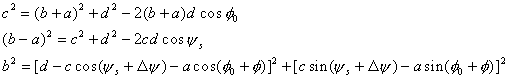
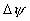
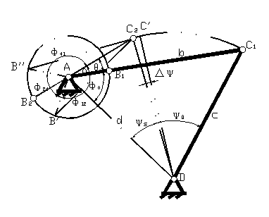
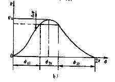

按从动杆近似停歇要求设计平面四杆机构
在实际生产中，有时要求从动杆在其某一极限位置上有一近似停歇，以配合实现某种工艺动作的要求。用连杆机构来实现这种近似停歇运动，具有运动平稳，加工简便等优点。因此已在不少机器 中得到应用。如在针织机、织布机、包装机等机械中采用曲柄摇杆机构实现某一极限位置上的近似停歇。又如冲床、压床等采用曲柄滑块机构实现某一极限位置上的近似停歇。
曲柄摇杆机构的设计
在下图中所示的曲柄摇杆机构中，摇杆CD的两个极限位置为C1D、C2D。C1D为前极限位置，C2D为后极限位置。从图中可以看出，摇杆在后极限位置附近运动要比在前极限位置附近更加缓慢。当曲柄与连杆的长度比a/b=λ较大时，近似停歇时间可以更长。
选用两极限位置的两三角形△AC1D、△AC2D以及在后极限位置附近的四边形AB'DC'、AB"DC'得

若a、b、c、d已知，由上面的第一个方程可以得到，由上面第二个方程可以得到，选择一个合适的 


曲柄摇杆机构实现近似停歇示意图